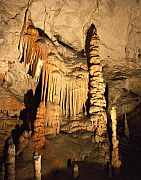
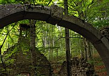

Disclaimer: These pages are not actively maintained, and some of the practical information on the site is out of date. I am working on a new version of the site that will focus more on my photos and memories of travel in Southeast Europe, and less on practical details that too easily become obsolete. In the meantime, please treat the information here with caution.

Postojna Cave
The Karst Region
There are many karsts but only one Karst. This limestone region in Southwest Slovenia has given its name to similar landscapes worldwide; many of the odd things that happen when limestone interacts with water were first studied in detail here. The rolling wooded hills may not be as striking on first impression as the Julian Alps to the north, but they contain some of Slovenia's most distinctive attractions - several of them below ground.
Postojna Cave is one of Slovenia's most visited tourist attractions. The visit starts at a busy underground station, from where trains carry hundreds of visitors deep into the mountain. Then you walk through a disorienting series of caverns, each containing a more bizarre array of rock formations than the last. The guides point out the most interesting curtains and columns, and draw your attention to stalactites and stalagmites that resemble various objects in the world above. It's hard to grasp that all this formed was created gradually over two million years, rather than being conceived in the mind of a demented set designer.
Predjama Castle, 9km north of Postojna, is a forbidding-looking fortress built into the side of a cliff. There is another cave at Predjama, and keen geologists can visit several more caves in the vicinity of Postojna - enquire in Postojna about opening hours.
Near Škocjan Cave
After visiting Postojna you might expect any other cave to be an anticlimax, but Škocjan Cave is more than capable of matching its more famous counterpart. Once again you will be guided through a series of caves filled with stalactites and stalagmites (no train this time). The highlight is the vast Müller Hall, where the path crosses a narrow bridge. An underground river rushes and splashes a long, long way below; the roof of the cavern is a long, long way above. It's a wonderful spot that is difficult to drag yourself away from.
Make sure you allow enough time to follow the marked paths through the Regional Park that surrounds the cave - there are some great views of the cave entrance and the collapsed valley that surrounds it.
I don't think you'll regret visiting both caves during a trip to Slovenia, but if I had to pick a favourite it would definitely be Škocjan. Postojna's stalactites and stalagmites are beautiful but not all that different from caves in some other countries, whereas I have never seen anything quite like Škocjan's enormous caverns. In addition, Škocjan is less crowded and considerably less Disneyfied than Postojna.
Cerknica Lake

Sv Nikolaj, near Cerknica
Not far from Postojna is Cerknica Lake. It's an intermittent lake, which means that I can't tell you exactly what to expect when you go there. If there has been a lot of rain recently you might see a 40 square kilometre expanse of water (most likely in spring). At other times you may see a much smaller lake or no water at all. The lake begins a short distance south of the town of the same name, near the village of Dolenje Jezero, where a small museum explains how the lake works. The surrounding area, although surrounded by hills, is a completely flat basin. You can walk along the country lanes, cycle, or follow the example of the rollerblading locals.
Perhaps the best way to appreciate the Lake Cerknica area is from above. A marked trail from Cerknica leads up Slivnica Mountain - the first section is steep but once you emerge above the tree line you will find an easy stroll through open meadows. From the hikers' hut at the summit (1114m) you can look down on Lake Cerknica - the outline of the intermittently flooded areas is distinctly visible, while the surrounding fields are a vivid green colour. A different trail down the mountain passes an eerie ruined church in the forest (called Sv Nikolaj, if I read my map correctly).
Natural bridge, Rakov Škocjan
A short distance north-west of Cerknica Lake, yet more geological oddities can be found in the Rakov Škocjan Regional Park (despite the name the park has no connection with Škocjan Cave). The park contains a short gorge with natural bridges at each end (Veliki and Mali Narodni Most). In between is a peaceful valley - it's hard to reconcile the stillness here with the force required to create the stone arches. Information boards point out the various sites of interest in the park.
Practicalities
All the places mentioned here can be visited on day trips from Ljubljana, even if you are relying on public transport. Frequent trains and buses take about an hour to get from Ljubljana to Postojna; many continue to Koper, so a day trip from the coast is also possible. The bus station is near the centre of Postojna town, and the caves are about 20 minutes walk away. The walk from the train station is longer as it is on the opposite side of town from the caves. Predjama Castle is not accessible on public transport.
See the FAQ for details of public transport to Škocjan cave. Check bus and train schedules at the sites listed on the Links page.
Both caves have websites where you can check opening hours and the schedule of guided tours - this is more important for Škocjan as tours start less frequently, especially in low season.
Cerknica is also reachable by bus from Ljubljana(1 hour), with frequent services on weekdays but only about 4 buses on weekends. It's possible to walk from Cerknica to Rakek train station through the woods to the north of the road. Rakov Škocjan can also be reached on foot from the north shore of Cerknica Lake or from Rakek train station - provided you have a map.
The "Notranjski Kras" map, widely available in Ljubljana bookshops, is useful for exploring the area around Postojna and Cerknica. Allow yourself plenty of time, as walking trails in this area are not always as carefully marked as those in the Alps.
More photos of the Karst region in my Slovenia Galleries